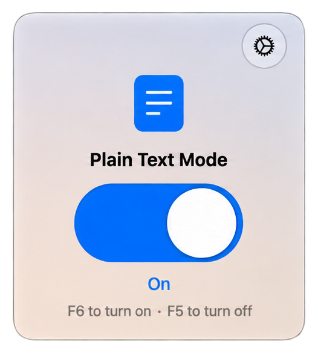
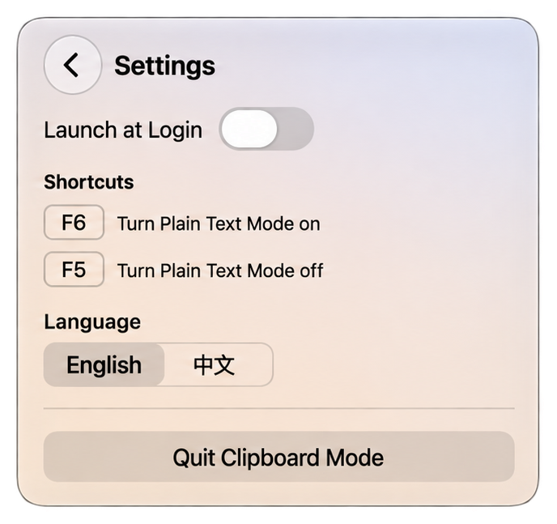
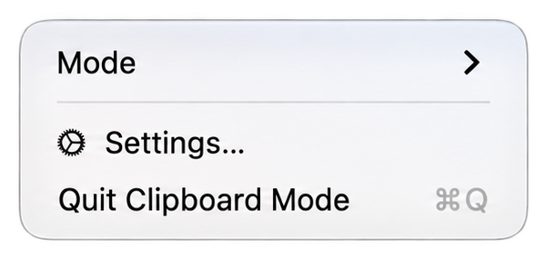

macOS & Windows · Open Source
A tiny native macOS and Windows utility that strips rich text from the clipboard, so every paste is plain text.
When Plain Text Mode is on, every copy is reduced to its plain-text representation: fonts, colors and other rich flavours are dropped, while Unicode, emoji, tabs and line breaks are preserved. When it is off, the clipboard behaves exactly as the system normally does. Both builds live in the menu bar or system tray only — no Dock icon, no taskbar window, no installer.


